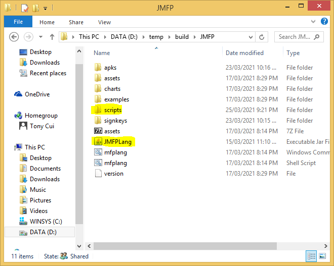
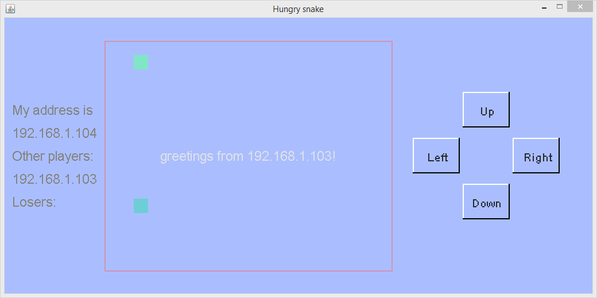
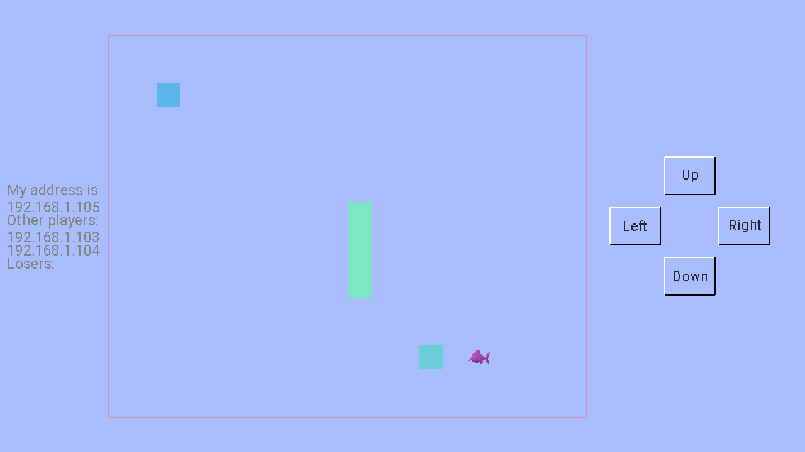

The multi-player and multi-device hungry snake game is developed from the single player hungry snake game. It has a very similiar interface to its single player ancestor. However, instead of providing multiple levels for a single player, all the players in this game have to compete with each other. A player loses the game if his or her snake hits another player's snake or itself. To make the game easy to play, only 2 to 4 players can join the game and there is no wall in the game.
Note that this multi-player and multi-device hungry snake game is just an example. Many issues are not considered, e.g. how to synchronize game status among all the players and how to prevent dead lock. As such sometimes the game may freeze when the third or fourth player joins because all players are waiting for other player's status message. And a snake may move across body of other snakes without hitting them because some players receive lagged information of other snakes' postion. Anyway, an example has to be simple and easy to understand so that concurrent/parallel programming is not the main focus here.
The game adopts TCPIP protocol to communicate between devices. Therefore, in the beginning of the game, player is required to input his or her IP address. Nevertheless, MFP is able to detect all the IP addresses used by the device and it will provide the IP address list to the player so that player only need to select the right address from the list. Then the player needs to type one of the remote devices' IP address. If the player is the first to join the game, just type ENTER to skip this input and the game starts. Note that there are at most four players in each game and one IP address cannot be used by more than one player.
The function below is able to print all the IP addresses used by a device.
function print_all_host_tcp_addresses()
variable all_local_addresses
all_local_addresses = get_all_host_addresses("TCPIP")[0,1]
for variable index = 0 to size(all_local_addresses)[0] - 1 step 1
variable all_interface_addresses = all_local_addresses[index]
if size(all_interface_addresses[1])[0] == 0
continue
endif
print("============= " + all_local_addresses[index, 0] + " =============\n")
for variable index1 = 0 to size(all_interface_addresses)[1] - 1 step 1
variable interface_addr = all_interface_addresses[1,index1]
print(interface_addr + "\n")
next
next
endf
When the game starts, the first player will be blocked waiting for other players to connect in. After another player joins the game, snakes are moving on the screen. If one of the players hits another snake and fails, the player is kicked out from the game while other players continue to play. Once kicked out, a player cannot rejoin the game until the whole game is restarted.
The communication between different devices is based on a messaging system with client-server structure. Each device is both a client and a server. Client sents message to remote servers and server's responsibility is reading received message and taking action as response. The code to start a server listening to the device IP address is shown below:
variable protocol = "TCPIP", local_address, server_address, local_interface, remote_interface, ret
variable my_address = input("My TCPIP address is:\n", "S")
local_address = my_address
local_interface = ::mfp::paracomp::connect::generate_interface(protocol, local_address)
... ...
ret = ::mfp::paracomp::connect::initialize_local(local_interface, true) // make local_interface a server. 讓local_interface做服務器
print("initialize_local server ret = " + ret + "\n")
ret = ::mfp::paracomp::connect::listen(local_interface)
print("listen ret = " + ret + "\n")
if !ret
throw "Cannot listen to " + local_interface
endif
For client, however, things are much easier as listening is not needed. Only initialize_local is required, as shown in the code below:
variable protocol = "TCPIP", local_address, server_address, local_interface, remote_interface, ret
variable my_address = input("My TCPIP address is:\n", "S")
local_address = my_address
... ...
ret = ::mfp::paracomp::connect::initialize_local(local_interface, false) // make local_interface a client. 讓local_interface做客戶端。
Client needs to set up a connection to remote server. This is achieved by calling connect function, as shown in the code below. Note that function connect takes interface instead of IP address as parameter. As such developer needs to call generate_interface function to create remote server's interface from its IP address.
remote_interface = ::mfp::paracomp::connect::generate_interface(protocol, server_address) // server address // 服务器地址
ret = ::mfp::paracomp::connect::connect(local_interface, remote_interface)
print("connect ret = " + ret + "\n")
variable conn = ::mfp::data_struct::array_based::get_value_from_abdict(ret, "CONNECT") // conn is the connection object // conn就是连接对象
After a connection is setup, client can send message to server by calling function send_sandbox_message. This function is very sophiscated. It has four working modes, i.e. sending message from a sandbox to its local main entity; sending message from main entity or sandbox to a local sandbox; sending message from local sandbox or main entity to a remote main entity; and sending message from local sandbox or main entity to a remote sandbox. To fully understand the use of this function, developer needs to be familiar with the fundamental of MFP's parallel programming model. However, in this game, messages are only sent from local main entity to remote main entity, i.e. mode 3. Developer needs not to know what main entity is. Simply passing two parameters, i.e. connection object and message content, to this function will work, as shown in the following code. Note that message content can be any data value, e.g. string, integer and array. In the example below the message is an array whose first element is "hs-start" and second element is local_address.
// now lets send start message to server. // 现在发送启动消息给服务端 ::mfp::paracomp::connect::send_sandbox_message(conn, ["hs-start", local_address])
In the server side, function receive_sandbox_message should be called in a loop to handle incoming messages. This function has two working modes. In the first mode the function is called within a sandbox. This working mode is not used in this game. The second working mode is used in the game. In this mode the function has two parameters. First is a local info object which is returned from generate_interface function. The second parameter is waiting time. 0 means no waiting time (i.e. immediately returning the first message from message queue or NULL if no message available). Less than 0 means this function will be blocked if no message available. Otherwise this function will wait at most the number of milliseconds defined in the parameter until a message comes, or returns NULL if still no message available after expiry. The returned message is a dictionary style array. Developer can use function get_value_from_abdict to extract each of its fields. The "InterfaceInfo" field is sender's local interface information which includes sender's IP address. The "CallId" field is sender's sandbox id. This is related to MFP's parallel programming model. As sandbox id is not used in this game, no need to worry about it. The "Message" field is the message content sent by the sender. The code snippet is shown below.
variable msg = receive_sandbox_message(server_local_interface, -1) // block mode.阻塞模式。 ... ... if msg != null // connect_id is client side connect id. // connect_id是远程端的connect id。 variable interface_info = ::mfp::data_struct::array_based::get_value_from_abdict(msg, "InterfaceInfo") variable connect_id = ::mfp::data_struct::array_based::get_value_from_abdict(interface_info, "LocalAddress") variable call_id = ::mfp::data_struct::array_based::get_value_from_abdict(msg, "CallId") variable msg_data = ::mfp::data_struct::array_based::get_value_from_abdict(msg, "Message")
When a snake hits other snake or itself, its player fails and has to quit the game. The connection(s) between the failed player and other players must be broken out. This is realized by calling function close_out_connection in the client side. Note that this is a two step procedure as there are always two connections built between any two players, from player A to player B and from player B to player A. The first step is the failed player closes it connection to other players. But before taking this action, the failed player sends "hs-ilose" message to other players so that they can close their connections to the failed peer in the second step. The code snippet is shown below.
for variable idx = 0 to size(other_players)[0] - 1 step 1 variable conn = other_players[idx].connectObj if and(other_players[idx].state != -1, conn != null) // now lets send moving or failure message to server. // 现在发送移动或者失敗的消息给服务端 if my_state == -1 // after the local player receives 'ilose' message, it sends 'iquit' to all remote players // 当本地玩家收到'ilose'消息之后，它发送'ilose'消息给其他远程玩家 send_sandbox_message(conn, "hs-ilose") close_out_connection(conn) else ... ... endif endif next
Note that another way to close a connection is shutting down from the server side by calling close_local function. However, this approach is not used since the client side will not be noticed after the connection is closed. If client sends a message after connection shutdown, the function call will fail and the whole program will be terminated.
The sample code and its auxiliary files have been zipped in package. Click here to download zipped package of game examples. Unzip it and copy the game_examples folder into the scripts folder next to the JMFPLang.jar file, as shown in the following chart.
The source script, i.e. oo_hungry_snake_parallel.mfps is in hungry_snake_parallel subfolder of game_examples folder. Its auxiliary files are also located in the same folder. To launch the example, simply start JMFPLang.jar file and in the command line run gdi_test::game_test::oo_hungry_snake_parallel::run(). Player can also navigate to the folder where JMFPLang.jar is located and then run the script in Windows Command/Powershell or Linux bash by typing java -jar JMFPLang.jar -f scripts\game_examples\hungry_snake_parallel\oo_hungry_snake_parallel.mfps.
Thanks to MFP's support to both JVM and Android, this game can run not only in PC with Java installed, but also in Android as an app or a script. The following charts snapshot the game on the two platforms. The top one is the game running in Windows + JVM and the second one is running in Android as an app.

